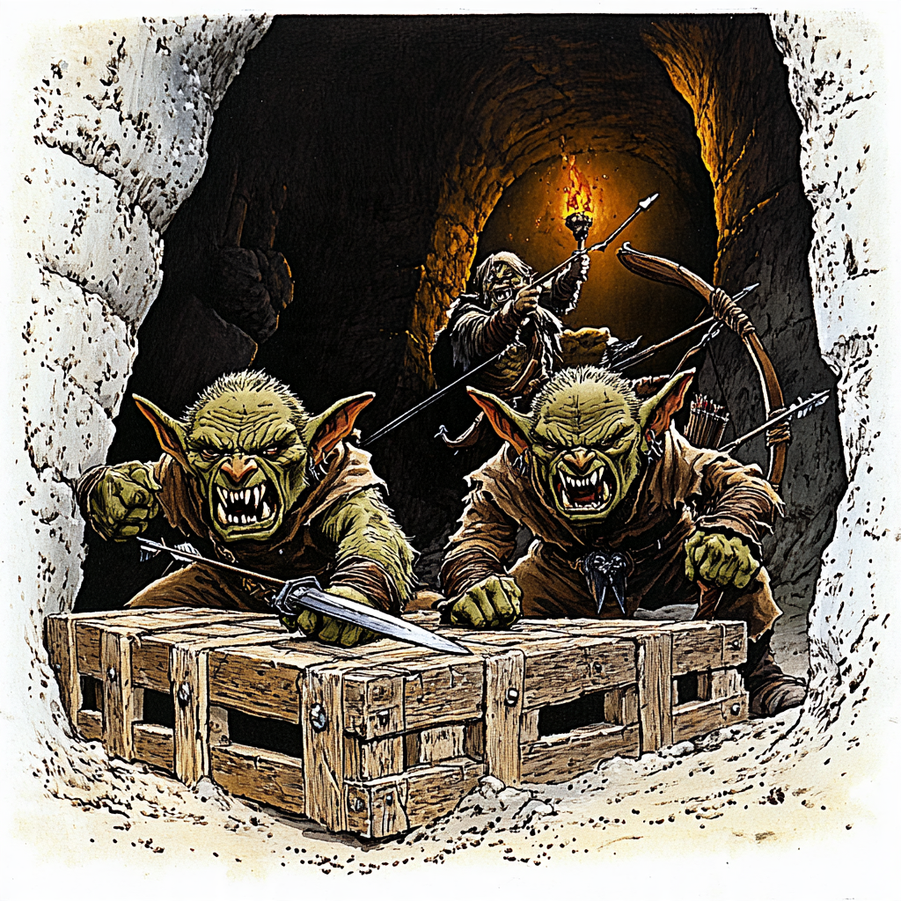
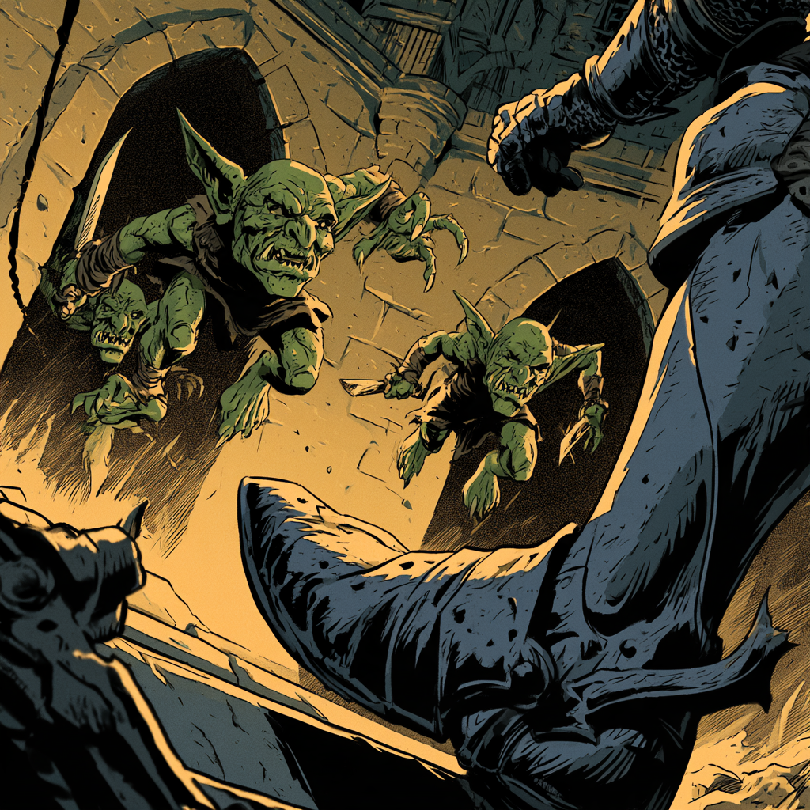

Banden-Vorposten
Goblins & Plünderer · Raumbegegnung

»Hinter hastig aufgetürmten Kisten funkeln gierige gelbe Augen. Ehe die Fackel den Raum erhellt, sirrt bereits die erste Bogensehne durch die Finsternis.«
Aufstellung
2× Goblin-Späher [V]
1× Goblin-Bogenschütze [H]
1× Goblin-Bogenschütze [H]
Raum-Element
1× Umgestürzte Kiste (Deckung)
Initiative / Status
Standard-Initiative
Befestigter Posten
Raum-Effekt
Die Goblins nutzen die Barrikade als Deckung (+1 Verteidigung gegen Fernkampf). Die vorderen Späher blockieren den Durchgang zur hinteren Raumhälfte.

Hinterhalt aus den Schatten!
Goblins & Plünderer · Überraschung

»Ein leises Klirren, ein reißender Draht – und schrille Schädelglocken zerschneiden die Stille! Aus den Felsnischen stürzen gierige Klingen auf die Vorhut herab.«
Aufstellung
2× Goblin-Späher [V]
1× Goblin-Bogenschütze [H]
1× Goblin-Bogenschütze [H]
Raum-Element
1× Stolperdraht-Falle
Initiative / Status
»HINTERHALT!«
Überraschungsangriff
Raum-Effekt
»Hinterhalt!« Alle Monster dieses Raumes aktivieren in Runde 1 vor allen Helden! Der vorderste Held muss GES (SG 6) bestehen oder stürzt zu Boden (verliert 2 Bewegungspunkte).